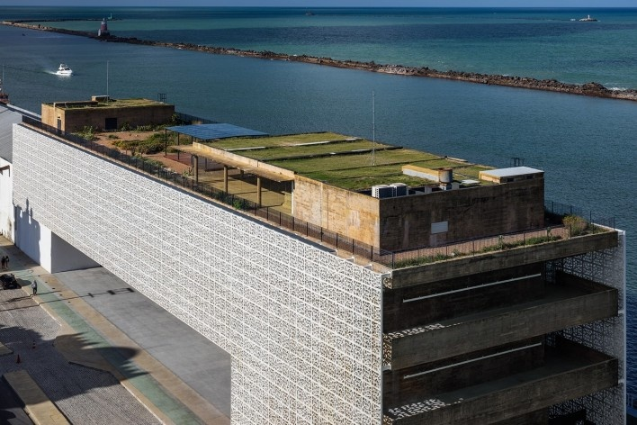

Histórico
Além do Marco Zero existem muitos outros pontos turisticos que vale a pena visitar no recife Antigo. Destacamos alguns deles a seguir.
Outros pontos turísticos
Com recursos de tecnologia inovadores, automação e interatividade, além da leitura generosa de cineastas, escritores, artesãos, artistas plásticos, artistas visuais e músicos de todo o país,
o Cais apresenta os fortes contrastes que marcam a vida nos sertões nordestinos, proporcionando aos visitantes uma experiência de imersão nesse universo